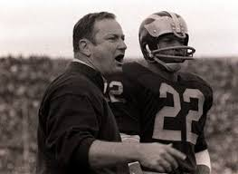
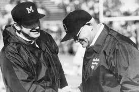
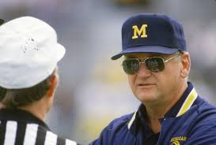

History of Michigan Football

Bo Schembechler is Hired
In 1969, Bo Schembechler was hired from Miami of Ohio to become the 15th head coach of the wolverines. In his first season Bo beat an Ohio State team dubbed as the greatest ever assembled by a score of 24-12.

10 Year War
The years between 1969 and 1978 became known as the 10 Year War between Michigan and OSU as either team won at least a share of the Big Ten title during those years. After OSU coach Woody Hayes was fired in 1978, Bo had compiled a record of 5-4-1 againts the buckeyes.
